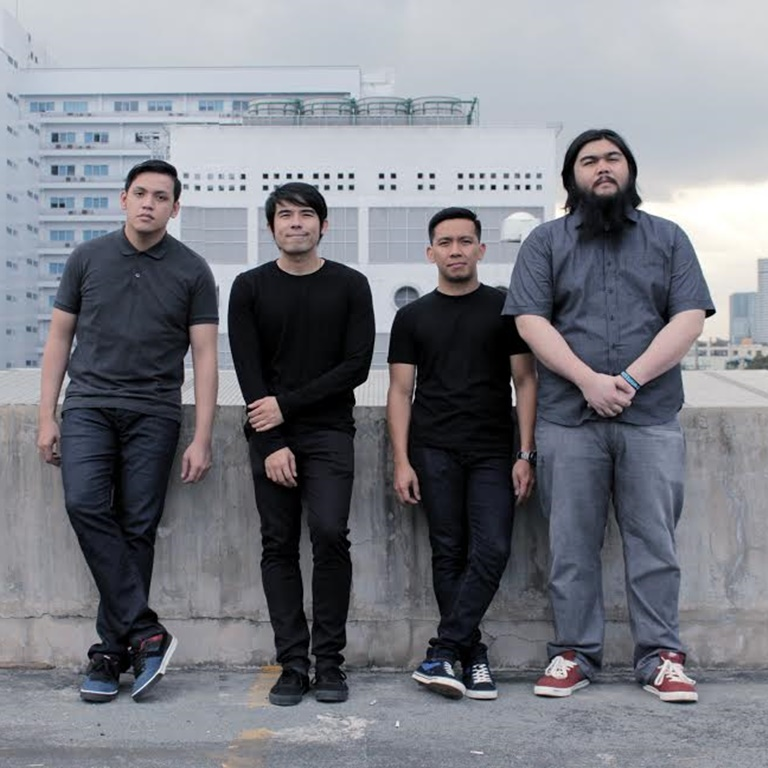

| Home | About | More | Contact |
HALE
|  |
Hale, a prominent Filipino alternative rock band, came into existence in 2004. They made a significant impact on the Philippine music scene with their self-titled debut album in 2005, which featured hit tracks like "Broken Sonnet" and "The Day You Said Goodnight." These songs not only captivated the hearts of fans but also established Hale as a household name in the country's music industry. Over the years, the band saw various lineup changes, but their unique blend of melodic and emotional music continued to resonate with their audience. In 2015, Hale made a triumphant return with the album "Time and Space, " reaffirming their enduring influence and popularity in the Philippines, where they remain a beloved musical institution.
| Origin: | Metro Manila, Philippines | |||
|---|---|---|---|---|
| Genres: | Alternative rock • pop rock • experimental | |||
| Members | Champ Lui Pio | Roll Martinez | Sheldon Gellada | Omnie Saroca |